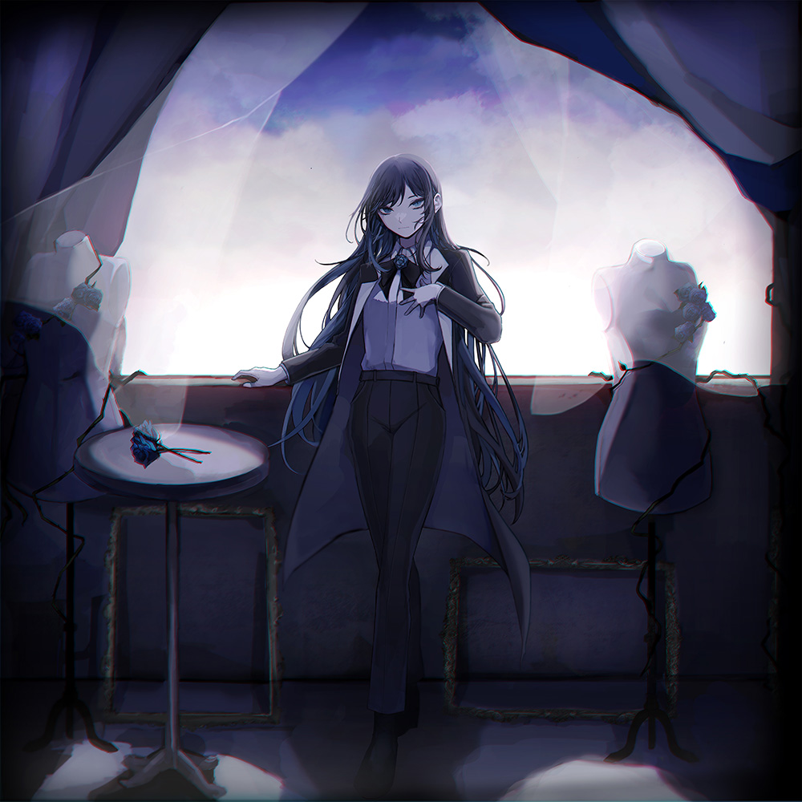
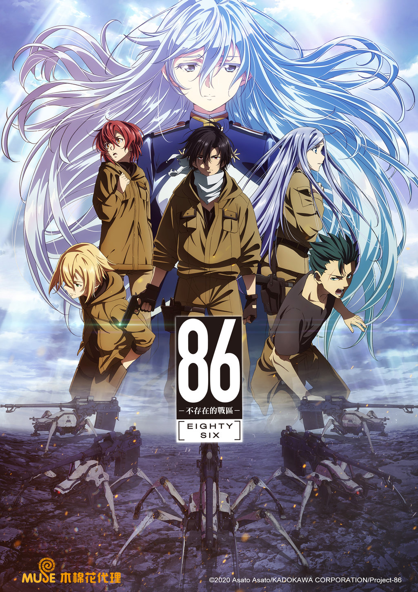

黃 河清
#VCT Masters Grand Finals MVP #VCT Americas Kickoff Champion·neko esport
iequin63315@gmail.com
2021 vct 冰島大師賽冠軍 2024 vct kick-off 冠軍
2021 vct 冰島大師賽冠軍 2024 vct kick-off 冠軍
任職過三個戰隊
2020~2021 Cloud9 2021~2024 Sentinels 2024~2025 Neko esport
#VCT Masters Grand Finals MVP
#VCT Americas Kickoff Champion
我平時喜歡聽音樂、騎車、玩電腦、看動漫
我最喜歡的歌手是 Ado
我最推薦的動漫是 86
